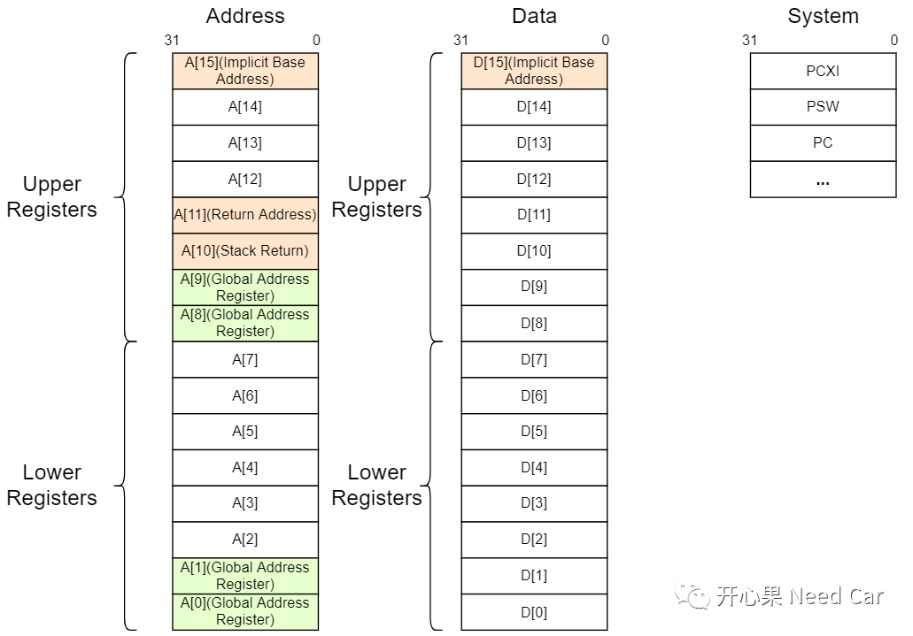
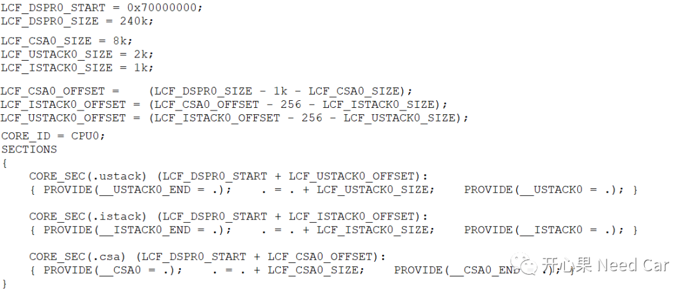
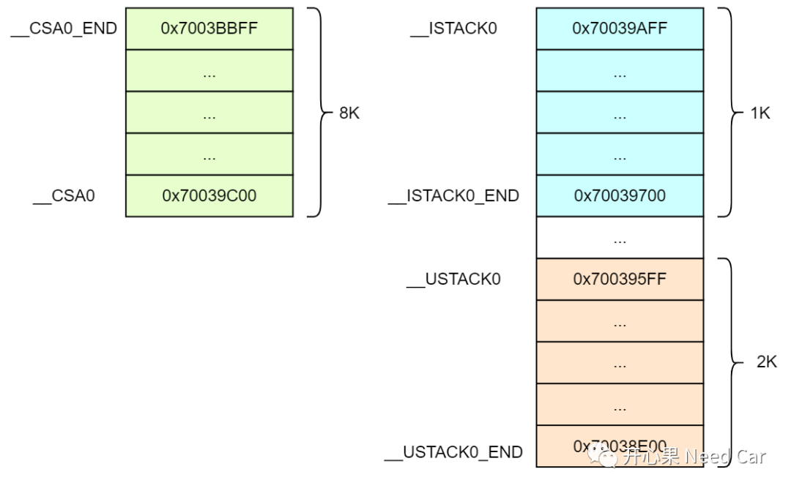
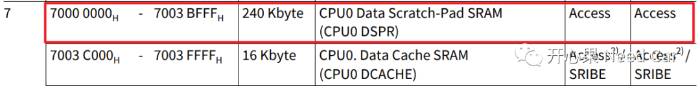
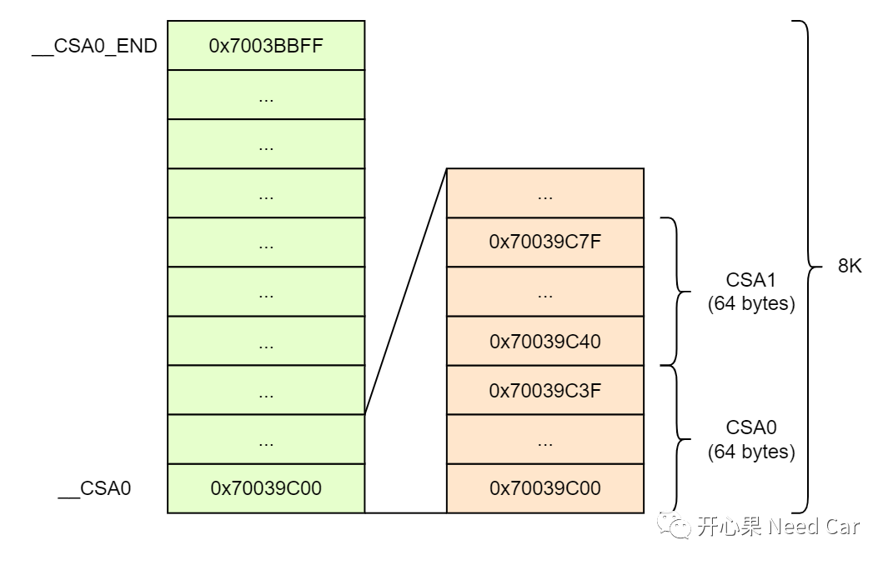
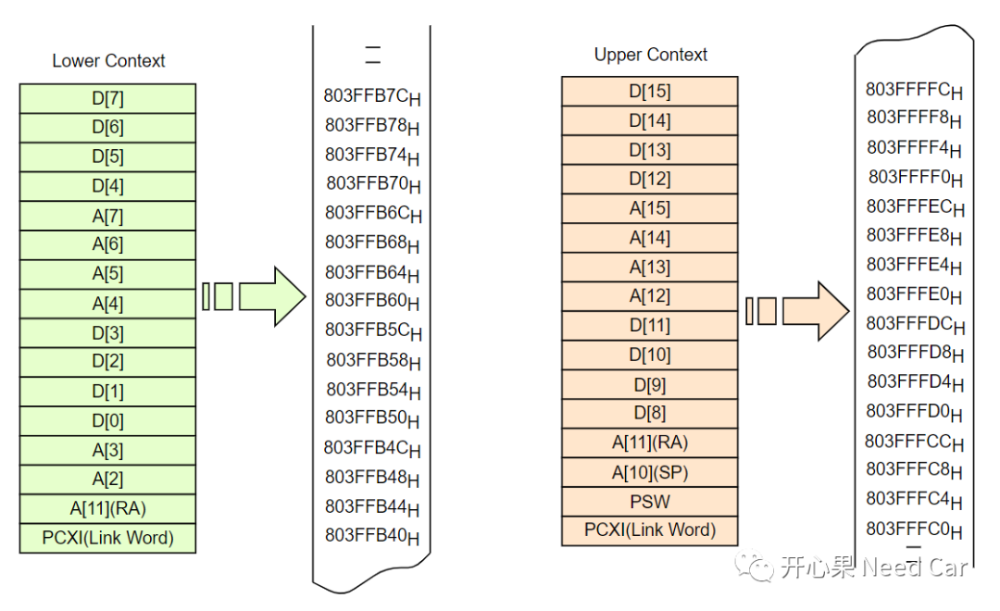
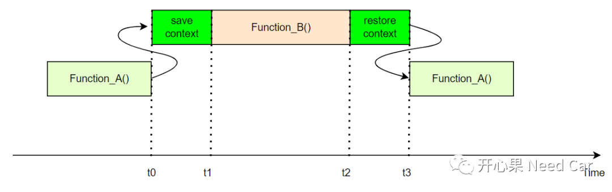

开心果 Need Car · 2022-08-28T18:32:00+08:00 · 微信原文
汽车嵌入式开发中，需要不断地拓宽自己的知识结构，才能更有效地理解Bug的本质，进而想出更好的解决策略。如果大家项目中，使用的是英飞凌系列芯片，熟悉TriCore架构是有必要的，这有助于你理解链接文件和启动代码的一些操作。本文分享一下自己对TriCore架构的一些理解。

A[10]：栈指针寄存器Stack Pointer (SP) register
A[11]：返回地址寄存器Return Address (RA) register
A[15]：隐式基地址寄存器Implicit Address register
D[15]：隐式数据寄存器Implicit Data register
A[0]、A[1]、A[8]、A[9]是系统全局寄存器，也就是说在函数调用、中断发生过程中，上下文的Save和Restore不会存储这4个寄存器中的信息。
这里需要着重关注一下A[11]和D[15]寄存器。这两个寄存器对于Bug问题的排查非常有用，为什么这样说呢?因为当程序异常时，D[15]寄存器存储记录TIN(Trap Identification Number)，A[11]记录Trap的入口地址。如果能获取这两个信息，很多问题可被快速定位。注意，如果Bug问题是异步的（Asynchronous），A[11]寄存器最近捕获的地址并不一定是问题发生点的入口地址。
D[15]寄存器很有用，在Tricore架构中，Trap分为8个等级：MMU (Memory Management Unit)、 Internal Protection、 Instruction Error、Context Management、System Bus and Peripherals、Assertion Trap、System Call、Non-Maskable Interrupt (NMI)。通过D[15]记录的TIN号即可确认Trap的Class，因此，可以在Trap程序中，将D[15]和A[11]寄存器的信息存储到NVM中，以便于Bug问题的排查。
在TriCore架构中，Tasks分为两种: Software Managed Tasks (SMTs) 和 Interrupt Service Routines (ISRs)。ISR 由硬件触发，直接响应中断；SMT任务由OS创建和调度，因此称为User Tasks。
每个Task会关联对应地模式(Mode)：
User-0 Mode: 用于不访问外设的Tasks，不能由中断操作
User-1 Mode：用于访问一些不受保护的外设Tasks，比如：定时器（TIM）访问任务，此类型任务可以短时间关中断。
Supervisor Mode:可访问系统所有寄存器和外设，且可以关闭中断。
一个Tasks执行过程中，会关联多个元素，也就是我们常说的任务上下文（Context）。而这些任务上下文信息是处理器（processor）工作所必须的输入，不然，岂不是“巧妇难为无米之炊”？
任务上下文信息都包括啥呢？任务使用的一些通用寄存器(General Registers)、PC寄存器、程序状态信息寄存器（PSW、PCXI）。Tasks的有效运行和维护由硬件直接操作。
TriCore架构中，Context分为Upper context 和Lower context，Upper context 由硬件自动存储，速度快；Lower context需要手动维护。
1、CSA(Context Save Areas)
上下文存储区(CSA)不知道你是否有留意。在链接文件中，会分配一定大小的CSA区间，如下所示：

上述3个栈的空间分配如下所示：




2、CSA作用
t0时刻，Function_A()调用Function_B()之前需要将对应的upper context 或者lower context信息存储（Save）到CSA中；
t1时刻，开始执行Function_B()；
t2时刻，返回Function_A()之前，需要将CSA中的信息恢复（Restore）；
t3时刻，返回Function_A()继续执行。
上述流程如下所示：

注意：
当Interrupt、Trap、Function Call发生时，upper context自动保存;
每个CSA实体16 Word对齐（64 byte）。
参考资料
Infineon-AURIX_TC3xx_Part1-UserManual-v01_00-EN.pdf
往期精彩回顾